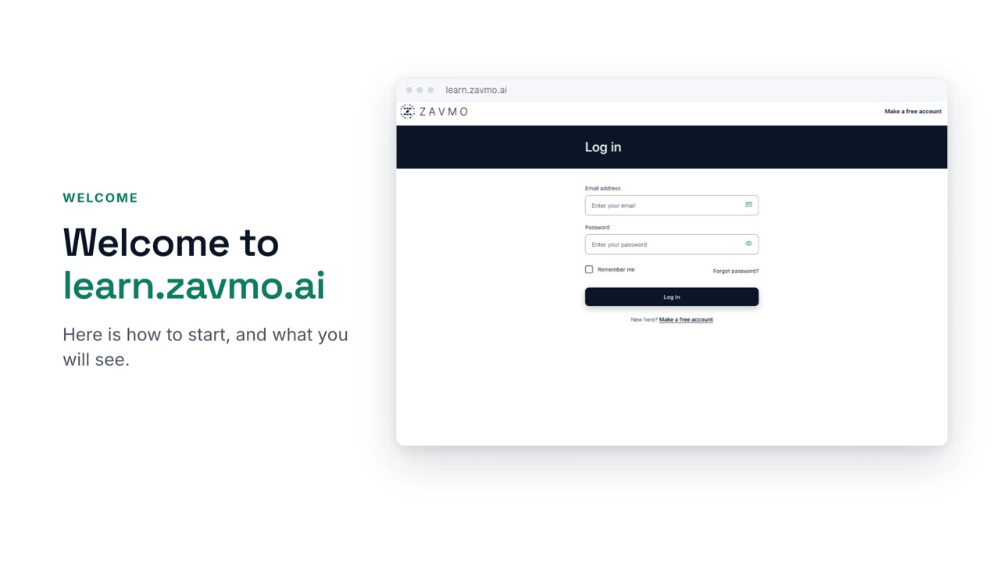

Film · 74 seconds
How Zavmo measures skills: from role profile to proof
Zavmo measures what people can do at work, not what they remember.
Bring your own skills matrix or use ours. Zavmo drafts role profiles from a library built from more than 43,000 job descriptions, and you approve them. Learners rate themselves, their manager confirms, and their work proves it. Assess at the start, skip what people already know, assess again at the end, and see each role's gaps with the pathway that closes them. Shown with example data.
Watch next
Try it yourself
No card needed. A few details and a password.
Make your free account at learn.zavmo.ai